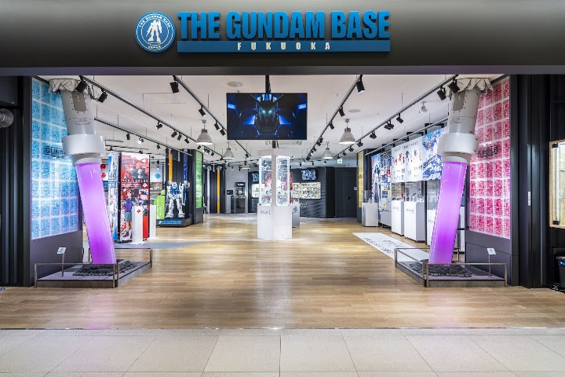
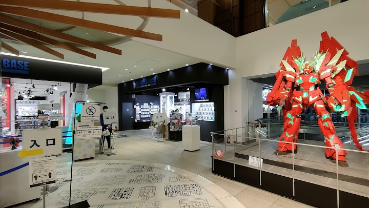
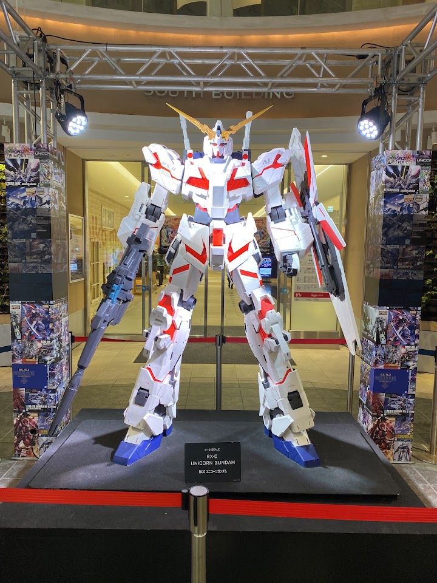

Gundam Base Fukuoka
Open in Google Maps (street view, more photos and reviews there)



Visitor tips on finding it and getting there
There are many Gundam Base Camps around the world 🌎. Within Japan 🇯🇵, Fukuoka is a highly rated Base Camp and I’m glad I got a chance to visit them. 😎 Location : It is located inside Canal City Hakata on the ground floor. And this is a 10mins walk 🚶♀️🚶🚶♂️from Kushida Shrine Train Station 🚇. If it is your first time to Canal City, it is basically a mega shopping mall 🏬linked to a hotel 🏨. You will have no issue finding Parking 🅿️, Shopping 🛍️ and Food 🍱. Staff : I had to get in line and queue up to go in. The entrance staff 👦🏻 was very polite, friendly and professional 👍. While queuing, the